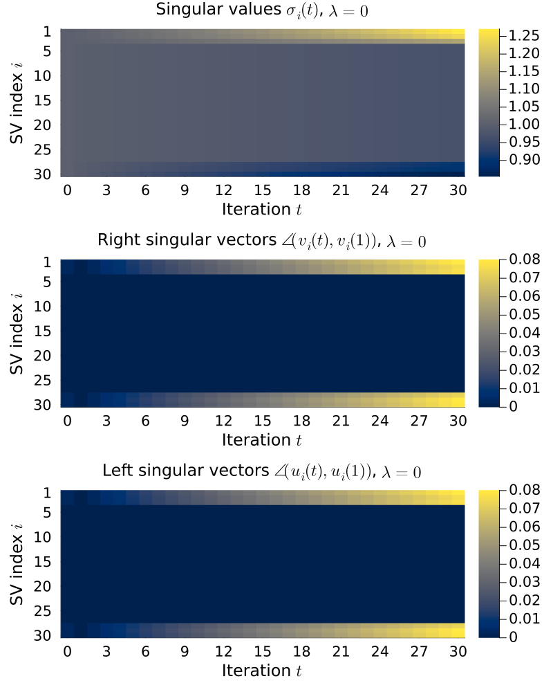
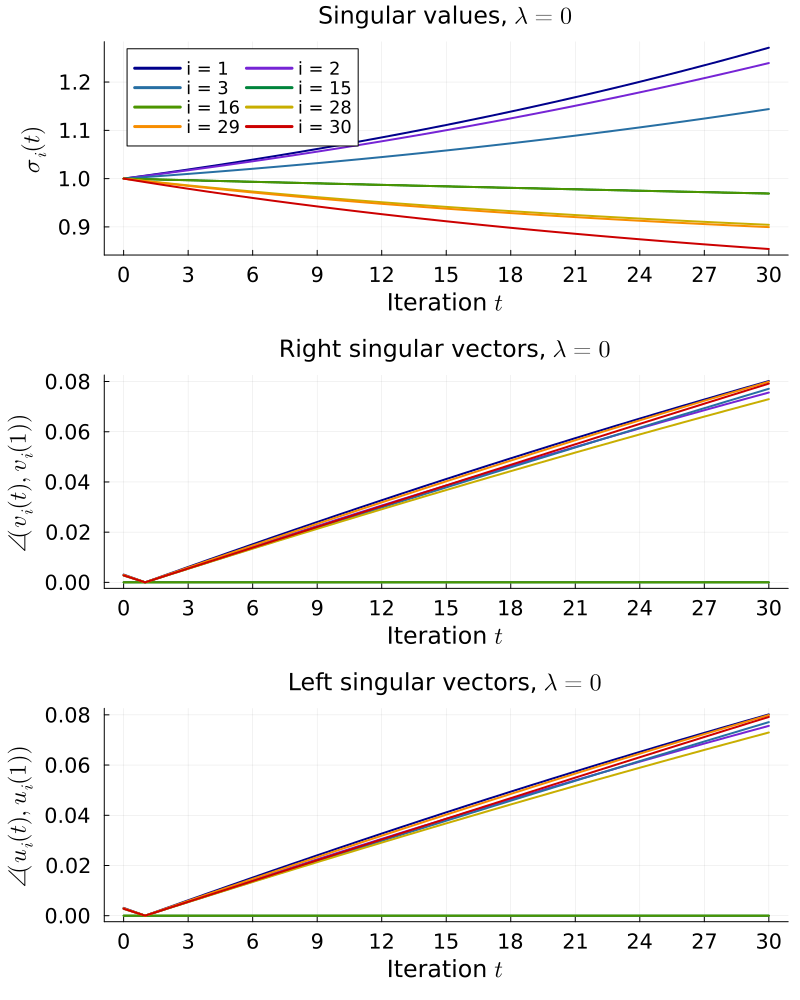
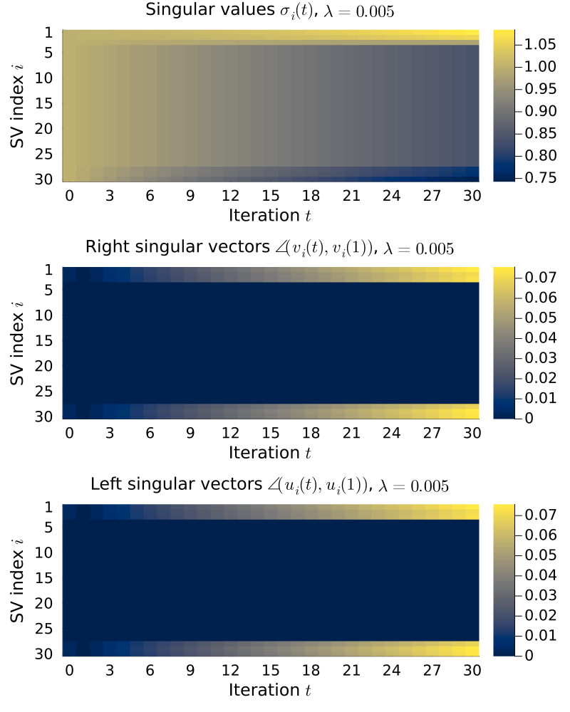
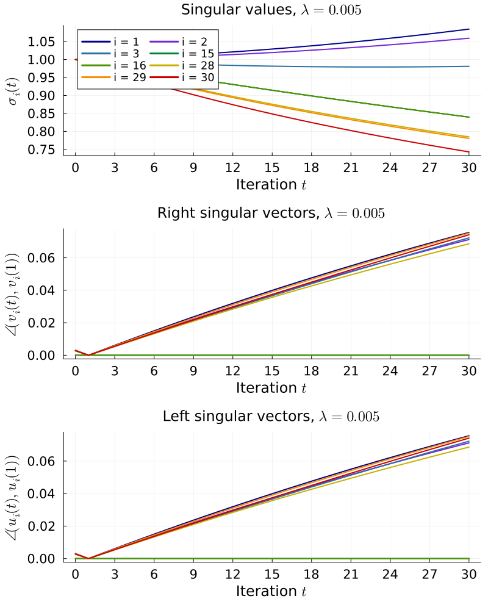
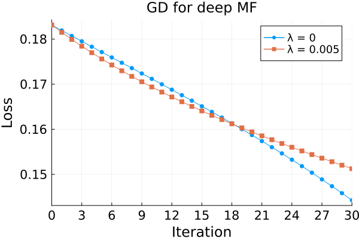

Deep matrix factorization
Illustrate the low-dimensional learning dynamics of gradient descent (GD) for deep matrix factorization in Julia.
This demo is based on Fig. 4 of the paper: L. Balzano, T. Ding, B. D. Haeffele, S. M. Kwon, Q. Qu, P. Wang, Z. Wang, C. Yaras, "An overview of low-rank structures in the training and adaptation of large models," IEEE Signal Processing Magazine, 43(3):52-70, 2026. The original Python/JAX code is at github.com/girasole/SPM-LowRankDeepLearning. Here we use the analytical expression for the gradient (instead of automatic differentiation) and we include optional weight decay.
This page comes from a single Julia file: deep-mf.jl.
You can access the source code for such Julia documentation using the 'Edit on GitHub' link in the top right. You can view the corresponding notebook in nbviewer here: deep-mf.ipynb, or open it in binder here: deep-mf.ipynb.
Setup
Add the Julia packages used in this demo. Change false to true in the following code block if you are using any of the following packages for the first time.
if false
import Pkg
Pkg.add([
"LaTeXStrings"
"LinearAlgebra"
"MIRTjim"
"Plots"
"Random"
])
endTell Julia to use the following packages. Run Pkg.add() in the preceding code block first, if needed.
using LaTeXStrings: @L_str, latexstring
using LinearAlgebra: svd, qr, Diagonal, diag, I
using MIRTjim: jim, prompt
using Plots: Plots, default, gui, savefig, cgrad, plot, plot!
using Random: seed!
default(); default(label="", markerstrokecolor = :auto,
tickfontsize=14, labelfontsize=16, legendfontsize=12, titlefontsize=16,
colorbar_tickfontsize = 10, colorbar_titlefontsize = 14)The following line is helpful when running this file as a script; this way it will prompt user to hit a key after each figure is displayed.
isinteractive() ? jim(:prompt, true) : prompt(:draw);Problem setup
The model is a depth-$L=3$ matrix factorization $W = W_3 W_2 W_1$, where each factor is $n × n$ with $n = 30$, initialized as a random orthogonal matrix. The model is fit to a random rank-3 target matrix $Y$ by minimizing the loss
\[f(θ) = \frac{1}{2 n^2} \| W_3 W_2 W_1 - Y \|_{\mathrm{F}}^2 + \frac{λ}{2} \sum_{l=1}^L \| W_l \|_{\mathrm{F}}^2\]
using GD with step size $η$, where $λ ≥ 0$ is the weight decay parameter. (With $λ = 0$ this matches the original Fig. 4.)
seed!(0)
n, depth, rank = 30, 3, 3
nstep = 30
save_steps = 0:nstep # save every iteration
η = 1.0 # step size
if !@isdefined(λ)
λ = 0.005 # weight decay for the 2nd run
end0.005Random orthogonal matrix (Haar distributed):
function rand_orth(n)
F = qr(randn(n, n))
return Matrix(F.Q) * Diagonal(sign.(diag(F.R)))
end;Random rank-3 target matrix:
U, s, V = svd(randn(n, n))
Y = U[:, 1:rank] * Diagonal(s[1:rank]) * V[:, 1:rank]'
s[1:rank]3-element Vector{Float64}:
10.976434497827924
9.923024240401112
9.396288431983614Gradient descent
Store the $L$ factors as a vector of matrices Ws = [W_1, W_2, …, W_L].
model(Ws) = foldl((A, W) -> W * A, Ws) # W3 * W2 * W1
loss(Ws) = sum(abs2, model(Ws) - Y) / 2 / length(Y); # data-fit termDefining the scaled residual $R = (W_L ⋯ W_1 - Y) / n^2$, the gradient of the data-fit term with respect to the $l$th factor is
\[∇_{W_l} f = (W_L ⋯ W_{l+1})' \, R \, (W_{l-1} ⋯ W_1)',\]
where an empty product is the identity matrix.
function grad(Ws)
R = (model(Ws) - Y) / length(Y)
return map(1:depth) do l
A = prod(reverse(Ws[l+1:end]); init = I) # W_L ⋯ W_{l+1}
B = prod(reverse(Ws[1:l-1]); init = I) # W_{l-1} ⋯ W_1
A' * R * B'
end
end;Random orthogonal initialization, shared by all runs so that they are comparable:
Ws0 = [rand_orth(n) for _ in 1:depth];Function to run GD with weight decay $λ$, saving the first factor $W_1$ at selected iterations, where iteration 0 is the initialization:
function run_gd(λ::Real; Ws = copy.(Ws0))
W1_history = Matrix{Float64}[]
loss_history = zeros(nstep+1)
for step in 0:nstep
step in save_steps && push!(W1_history, copy(Ws[1]))
loss_history[step+1] = loss(Ws)
step == nstep && break
G = grad(Ws)
Ws = [(1 - η*λ) * W - η * g for (W, g) in zip(Ws, G)] # W ← (1-ηλ)W - η ∇f
end
return W1_history, loss_history
end;Singular value decomposition of $W_1$ over iterations
Compute the singular values of $W_1(t)$ and the angles between its singular vectors and those of $W_1(1)$. The reference is iteration $t=1$ rather than the initialization, because the initial factor $W_1(0)$ is orthogonal, so all of its singular values equal 1 and its singular vectors are not unique: any orthonormal basis is valid, so angles relative to the basis that svd happens to return would be meaningless. (At $t=0$ the Procrustes rotation below picks the basis for $W_1(0)$ that is closest to that of $W_1(1)$, so those angles are small.) Singular vectors are defined only up to sign (and up to rotation within repeated singular values), so first align them with an orthogonal Procrustes rotation, as in the original python code.
function svd_series(Ws; ref::Int = 2) # Ws[2] is W_1(1)
F0 = svd(Ws[ref])
sv, right, left = (zeros(n, length(Ws)) for _ in 1:3)
for (k, W) in enumerate(Ws)
F = svd(W)
P = svd(F.U' * F0.U + F.V' * F0.V) # Procrustes alignment
Q = P.U * P.Vt
Ut, Vt = F.U * Q, F.V * Q
sv[:, k] = F.S
right[:, k] = acos.(clamp.(vec(sum(Vt .* F0.V, dims=1)), 0, 1))
left[:, k] = acos.(clamp.(vec(sum(Ut .* F0.U, dims=1)), 0, 1))
end
return sv, right, left
end;Plotting functions
Images of the singular value and angle arrays: each image shows a $T × n$ array, with the iteration $t$ along the horizontal axis and the singular value index $i$ along the vertical axis.
titles = ["Singular values", "Right singular vectors", "Left singular vectors"]
mlabels = [raw"\sigma_i(t)", raw"\angle(v_i(t), v_i(1))", raw"\angle(u_i(t), u_i(1))"]
clabels = [latexstring("\$", m, "\$") for m in mlabels] # mix string and LaTeX
tlabel(j, λ, math = "") = latexstring(titles[j], math, ", \$λ = $λ\$")
function plot_jim(series, λ)
pj = map(1:3) do j
jim(save_steps, 1:n, series[j]',
tlabel(j, λ, " \$" * mlabels[j] * "\$");
xlabel = L"Iteration $t$", ylabel = L"SV index $i$",
yflip = true, aspect_ratio = :auto, color = :cividis,
prompt = false, xticks = 0:3:nstep, yticks = [1; 5:5:n],
)
end
return plot(pj...; layout = (3, 1), size = (800, 1000),
left_margin = 5Plots.mm, right_margin = 5Plots.mm)
end;Same information as line plots, with one curve per singular value index $i$ showing its evolution over iterations. Only some of the more interesting indices are labeled in the legend.
ilabel = [1:3; n÷2; n÷2+1; n-2:n] # first 3, middle 2, last 3
function plot_lines(series, λ)
colors = cgrad(:darktest, length(ilabel), categorical=true) # for labeled curves
p2 = map(1:3) do j
p = plot(; xlabel = L"Iteration $t$", ylabel = clabels[j],
xticks = 0:3:nstep, title = tlabel(j, λ),
legend = j == 1 ? :topleft : false, legend_columns = 2)
for i in 1:n # unlabeled curves in light gray, underneath
i in ilabel || plot!(p, save_steps, series[j][i, :]; color = :gray, alpha = 0.4)
end
for (k, i) in enumerate(ilabel)
plot!(p, save_steps, series[j][i, :]; color = colors[k],
linewidth = 2, label = "i = $i")
end
p
end
return plot(p2...; layout = (3, 1), size = (800, 1000),
left_margin = 5Plots.mm)
end;Without weight decay
First run GD with $λ = 0$, which matches the original Fig. 4.
W1_history0, loss_history0 = run_gd(0)
series0 = svd_series(W1_history0); # each is (n, length(save_steps))Only the top 3 and bottom 3 singular values change appreciably; the other singular values and singular vectors stay (nearly) fixed at their initial values. This is the low-dimensional subspace structure of the learning dynamics.
pj0 = plot_jim(series0, 0)
prompt()plin0 = plot_lines(series0, 0)
prompt()With weight decay
Now repeat with weight decay $λ > 0$, starting from the same initialization.
W1_history1, loss_history1 = run_gd(λ)
series1 = svd_series(W1_history1);Now all singular values of $W_1$ shrink, but the 3 singular values associated with the rank-3 target shrink less than the others.
pj1 = plot_jim(series1, λ)
prompt()plin1 = plot_lines(series1, λ)
prompt()Loss comparison
Data-fit loss versus iteration for both runs:
pl = plot(; xaxis = ("Iteration", (0,nstep), 0:3:nstep),
yaxis = ("Loss",), title = "GD for deep MF", size = (600, 400))
plot!(pl, 0:nstep, loss_history0; marker = :circle, label = "λ = 0")
plot!(pl, 0:nstep, loss_history1; marker = :square, label = "λ = $λ")
prompt()This page was generated using Literate.jl.